한국사능력검정시험-중급(폐지) (2015-05-23 기출문제)
1. 교사의 질문에 대한 답변으로 옳은 것은? [2점]
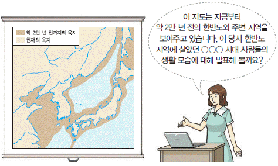
- 가락바퀴를 이용하여 실을 뽑았습니다.
- 빗살무늬 토기에 식량을 저장하였습니다.
- 지배층의 무덤으로 고인돌을 만들었습니다.
- 뗀석기를 사용하여 짐승을 사냥하였습니다.
- 반달 돌칼을 이용해 곡식을 수확하였습니다.
(정답률: 83%)

2. 다음 자료에 해당하는 나라에서 볼 수 있는 모습으로 가장 적절한 것은? [2점]
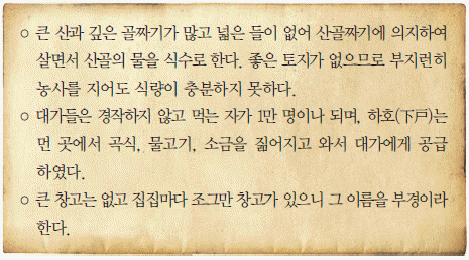
- 벽란도에서 교역을 하는 송 상인
- 진대법 실시 소식에 기뻐하는 농민
- 상평통보를 내고 비녀를 사는 부인
- 금속 활자로 불경을 인쇄하는 승려
- 소에서 생산된 종이를 운반하는 주민
(정답률: 69%)
3. 다음 인터뷰에 해당하는 나라에 대한 설명으로 옳은 것은? [2점]
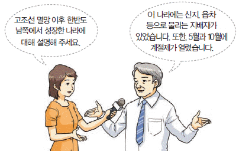
- 서옥제라는 풍습이 있었다.
- 천군이 관장하는 소도가 있었다.
- 고구려에 소금과 어물 등의 공물을 바쳤다.
- 단궁, 과하마, 반어피 등의 특산물이 있었다.
- 마가, 우가, 구가, 저가가 사출도를 다스렸다.
(정답률: 82%)
4. 학생의 질문에 대한 답변으로 가장 적절한 것은? [3점]
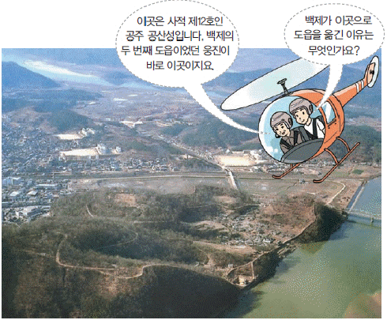
- 성왕이 관산성 전투에서 전사하였기 때문입니다.
- 황산벌 전투에서 신라군에게 패배하였기 때문입니다.
- 귀족 세력을 억누르고 왕권을 강화하기 위해서입니다.
- 고구려의 공격으로 한강 유역을 빼앗겼기 때문입니다.
- 낙랑군을 공격하여 중국 세력을 몰아내기 위해서입니다.
(정답률: 79%)
5. 다음 대화를 나눈 왕의 업적으로 옳은 것은? [2점]
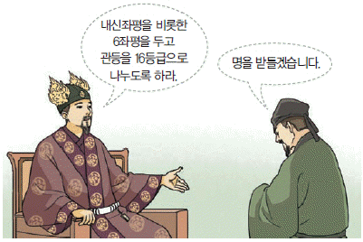
- 서기를 편찬하였다.
- 불교를 공인하였다.
- 관리의 공복을 제정하였다.
- 국호를 남부여로 바꾸었다.
- 지방에 22담로를 설치하였다.
(정답률: 60%)
6. (가), (나) 인물에 대한 설명으로 옳은 것은? [1점]
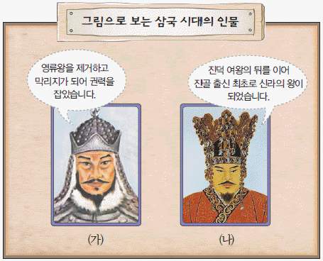
- (가) - 신라의 대야성을 빼앗았다.
- (가) - 살수 대첩을 승리로 이끌었다.
- (나) - 백제를 공격하여 멸망시켰다.
- (나) - 고구려의 평양성을 함락시켰다.
- (가), (나) - 당과 군사 동맹을 체결하였다.
(정답률: 47%)
7. (가) 나라에 대한 설명으로 옳은 것은? [3점]
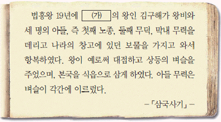
- 귀족 세력을 대표하는 상대등이 있었다.
- 제가 회의에서 중요한 일을 결정하였다.
- 지방 행정 구역으로 9주 5소경을 두었다.
- 김수로가 김해 지역을 중심으로 건국하였다.
- 2성 6부를 토대로 중앙 통치 조직을 정비하였다.
(정답률: 68%)
8. 밑줄 그은 ‘이곳’에 해당하는 문화유산으로 옳은 것은? [1점]
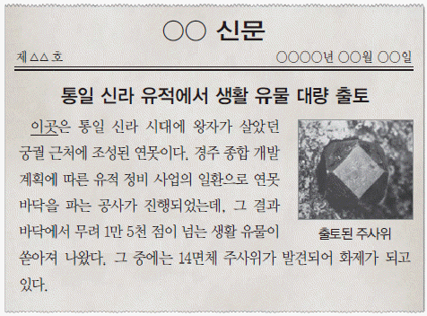
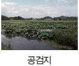
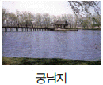
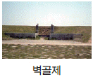
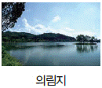
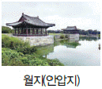
(정답률: 77%)
9. 지도의 (가) 국가에 대한 설명으로 옳은 것은? [2점]
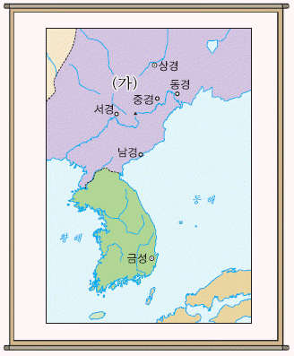
- 골품제라는 신분제가 있었다.
- 전성기에 해동성국이라 불렸다.
- 9서당 10정의 군사 조직을 두었다.
- 주몽이 졸본 지역에서 건국하였다.
- 중국의 남북조와 동시에 교류하였다.
(정답률: 84%)
10. 다음 상황이 나타난 배경으로 옳은 것을 <보기>에서 고른 것은? [2점]
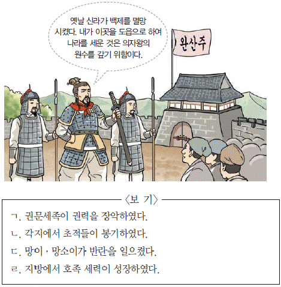
- ㄱ, ㄴ
- ㄱ, ㄷ
- ㄴ, ㄷ
- ㄴ, ㄹ
- ㄷ, ㄹ
(정답률: 60%)
11. 다음 설명에 해당하는 문화유산으로 옳은 것은? [1점]
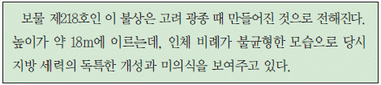
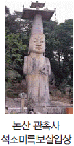
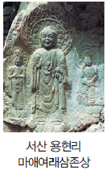
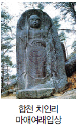
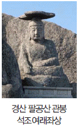
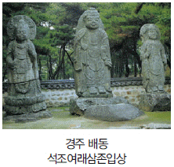
(정답률: 82%)
12. (가) 시기에 있었던 역사적 사실로 옳은 것은? [3점]
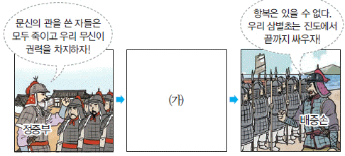
- 최충헌이 교정도감을 설치하였다.
- 조준이 과전법 실시를 주장하였다.
- 최승로가 시무 28조를 건의하였다.
- 의천이 해동 천태종을 개창하였다.
- 이자겸이 금의 사대 요구를 받아들였다.
(정답률: 72%)
13. (가)~(다)에 해당하는 이민족을 옳게 연결한 것은(순서대로 가, 나, 다)? [3점]
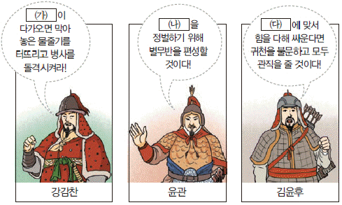
- 거란, 몽골, 여진
- 거란, 여진, 몽골
- 몽골, 거란, 여진
- 몽골, 여진, 거란
- 여진, 거란, 몽골
(정답률: 75%)
14. (가)에 들어갈 내용으로 옳지 않은 것은? [2점]
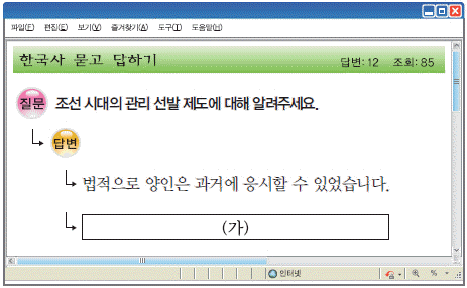
- 독서삼품과가 시행되었습니다.
- 중종 때 현량과가 실시되었습니다.
- 무관을 선발하는 무과가 있었습니다.
- 잡과를 통해 기술관을 선발하였습니다.
- 식년시는 원칙적으로 3년마다 치러졌습니다.
(정답률: 60%)
15. 다음 검색창에 들어갈 정치 기구로 옳은 것은? [1점]
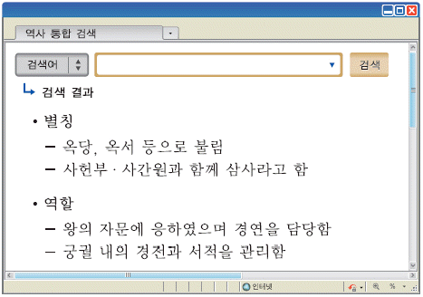
- 승정원
- 의금부
- 의정부
- 한성부
- 홍문관
(정답률: 73%)
16. 밑줄 그은 ‘왕’의 업적으로 옳은 것은? [2점]
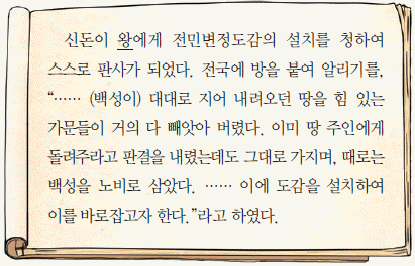
- 원의 수도에 만권당을 설립하였다.
- 친원 세력인 기철 등을 제거하였다.
- 대광현 등 발해의 유민을 받아들였다.
- 빈민 구제를 위해 흑창을 설치하였다.
- 광덕이라는 독자적인 연호를 사용하였다.
(정답률: 65%)
17. 다음 가상 시나리오의 상황 이후에 전개된 사실로 옳은 것은? [3점]
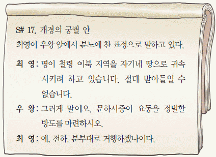
- 김부식이 서경 천도 운동을 진압하였다.
- 장문휴가 산둥 반도의 덩저우를 공격하였다.
- 서희가 외교 담판으로 강동 6주를 확보하였다.
- 이성계가 위화도 회군으로 권력을 장악하였다.
- 최우가 장기 항전을 위해 강화도로 천도하였다.
(정답률: 70%)
18. 밑줄 그은 ‘정책’으로 옳은 것을 <보기>에서 고른 것은? [2점]
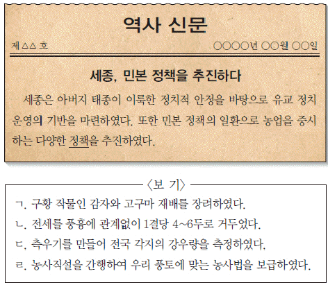
- ㄱ, ㄴ
- ㄱ, ㄷ
- ㄴ, ㄷ
- ㄴ, ㄹ
- ㄷ, ㄹ
(정답률: 83%)
19. 밑줄 그은 ‘이 책’에 대한 설명으로 옳은 것은? [1점]
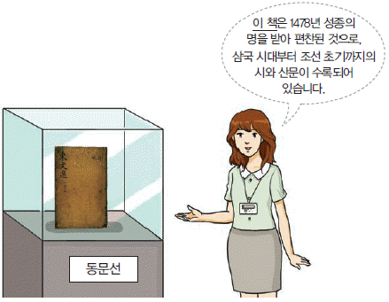
- 서거정의 주도로 편찬되었다.
- 청의 문물 수용을 주장하였다.
- 군주의 도를 도식으로 설명하였다.
- 유네스코 세계 기록 유산으로 등재되었다.
- 충신과 효자, 열녀의 행적을 글과 그림으로 소개하였다.
(정답률: 47%)
20. 다음 가상 인터뷰에 등장하는 왕의 업적으로 옳은 것은? [2점]
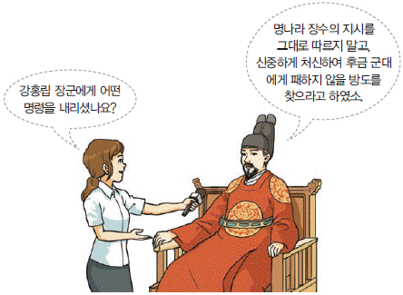
- 한양으로 천도하였다.
- 경국대전을 반포하였다.
- 초계문신제를 실시하였다.
- 신문고를 처음 설치하였다.
- 경기도에 대동법을 시행하였다.
(정답률: 63%)
21. (가)에 해당하는 인물로 옳은 것은? [1점]
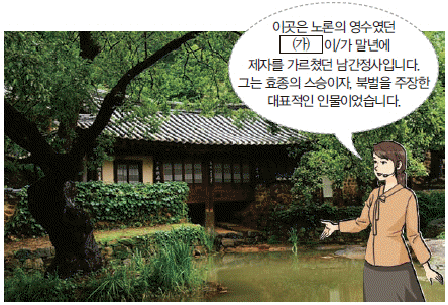
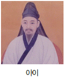
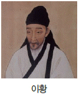
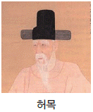
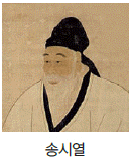
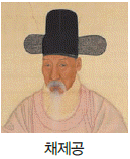
(정답률: 66%)
22. 밑줄 그은 ‘이 왕’의 업적으로 옳은 것은? [2점]
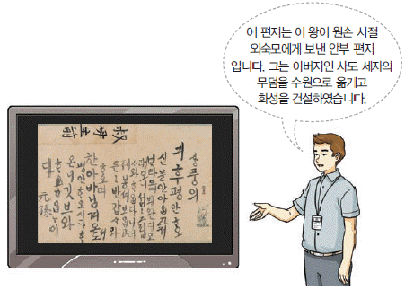
- 성균관 입구에 탕평비를 건립하였다.
- 국왕 친위 부대인 장용영을 창설하였다.
- 학문 연구 기관인 집현전을 설치하였다.
- 조총 부대를 파병하여 나선 정벌을 단행하였다.
- 통치 체제 정비를 위해 대전회통을 편찬하였다.
(정답률: 70%)
23. (가)에 들어갈 내용으로 옳은 것은? [2점]
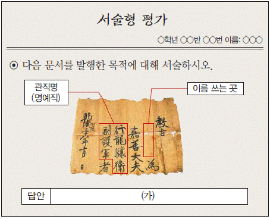
- 요역을 부과하기 위해 만들어졌다.
- 과거 합격을 증명하기 위해 제작되었다.
- 재정 부족 문제를 해결하기 위해 발급되었다.
- 토지의 소유권을 명확히 하기 위해 발행되었다.
- 촌락의 인구, 토산물 등을 파악하기 위해 작성되었다
(정답률: 54%)
24. (가)~(마)에 대한 설명으로 옳지 않은 것은? [2점]
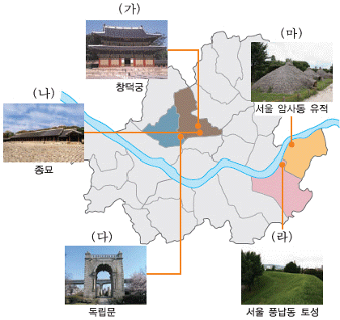
- (가) - 서양식 건물인 석조전이 있다.
- (나) - 조선의 왕과 왕비의 신주가 모셔져 있다.
- (다) - 독립 협회의 주도로 건립되었다.
- (라) - 삼국 시대에 백제가 쌓은 토성이다.
- (마) - 신석기 시대의 유물이 출토되었다.
(정답률: 55%)
25. (가)~(마) 상인에 대한 설명으로 옳은 것은? [2점]
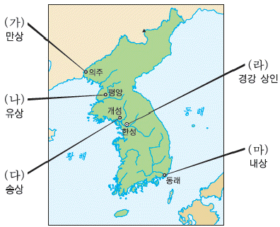
- (가) - 주로 청과의 무역에 종사하였다.
- (나) - 황국 중앙 총상회를 조직하였다.
- (다) - 육의전 상인이 대표적이었다.
- (라) - 각지에 송방이라는 지점을 설치하였다.
- (마) - 금난전권을 통해 사상(私商)을 억압하였다.
(정답률: 51%)
26. (가)에 들어갈 내용으로 옳은 것은? [2점]
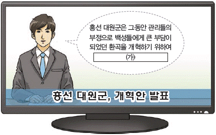
- 사창제를 실시하기로 하였습니다.
- 전환국을 설립하기로 하였습니다.
- 직전법을 폐지하기로 하였습니다.
- 호패법을 시행하기로 하였습니다.
- 유향소를 혁파하기로 하였습니다.
(정답률: 66%)
27. 밑줄 그은 ‘전쟁’ 중에 있었던 사실로 옳은 것은? [3점]
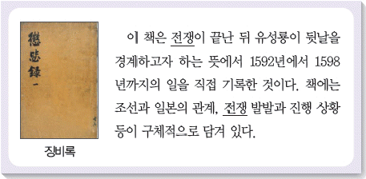
- 김종서가 6진을 설치하였다.
- 이종무가 대마도를 정벌하였다.
- 인조가 남한산성으로 피신하였다.
- 임경업이 백마산성에서 항전하였다.
- 권율이 행주산성에서 크게 승리하였다.
(정답률: 69%)
28. (가)에서 (나)로 수취 제도가 변화된 원인으로 가장 적절한 것은? [2점]
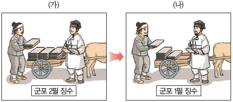
- 균역법 실시
- 상평창 설치
- 제위보 설치
- 신해통공 실시
- 연분 9등법 실시
(정답률: 81%)
29. 밑줄 그은 ‘그’의 활동으로 옳은 것은? [2점]
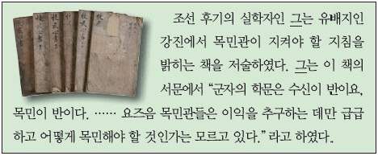
- 거중기를 설계하였다.
- 인왕제색도를 그렸다.
- 북학의를 저술하였다.
- 강화학파를 형성하였다.
- 대동여지도를 제작하였다.
(정답률: 73%)
30. 다음 개혁안이 발표된 시기를 연표에서 옳게 고른 것은? [2점]
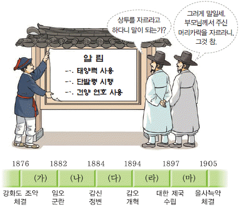
- (가)
- (나)
- (다)
- (라)
- (마)
(정답률: 61%)
31. (가)~(라) 유적지를 답사 일정에 따라 옳게 나열한 것은? [3점]
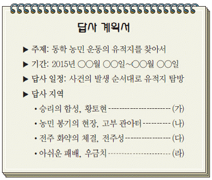
- (가) - (나) - (다) - (라)
- (가) - (나) - (라) - (다)
- (나) - (가) - (다) - (라)
- (나) - (가) - (라) - (다)
- (다) - (나) - (가) - (라)
(정답률: 67%)
32. 밑줄 그은 ‘이곳’에 대한 탐구 활동으로 가장 적절한 것은? [1점]
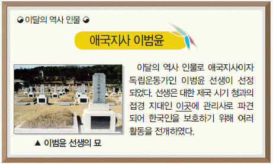
- 최초로 개항한 항구를 검색한다.
- 오산 학교가 세워진 장소를 찾아본다.
- 영국이 불법 점령한 목적을 알아본다.
- 구미 위원부가 설치된 지역을 살펴본다.
- 백두산 정계비의 비문 내용을 조사한다.
(정답률: 52%)
33. 다음 자료에 해당하는 신문으로 옳은 것은? [2점]
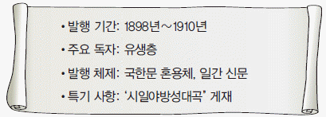
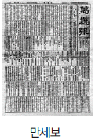
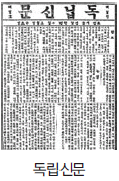
(정답률: 60%)
34. (가) 인물의 활동으로 옳은 것은? [1점]
- 한국 통사를 저술하였다.
- 조선 형평사를 조직하였다.
- 조선 의용대를 창설하였다.
- 신흥 강습소를 설립하였다.
- 파리 강화 회의에 파견되었다.
(정답률: 45%)
35. (가)에 들어갈 운동에 대한 설명으로 옳은 것은? [2점]
- 대한 매일 신보의 후원을 받았다.
- 조선 물산 장려회의 주도로 전개되었다.
- 신간회의 지원으로 민중 대회가 추진되었다.
- 일제의 황무지 개간권 요구 철회를 주장하였다.
- ‘한민족 1천만이 한 사람 1원씩’을 구호로 하였다.
(정답률: 75%)
36. 다음 가상 일기에 나타난 사건의 결과로 옳은 것은? [3점]
- 삼국 간섭이 일어났다.
- 아관 파천이 단행되었다.
- 운요호 사건이 발생하였다.
- 고종이 강제로 퇴위당하였다.
- 미국에 보빙사가 파견되었다.
(정답률: 75%)
37. 다음 인물 카드의 (가)에 들어갈 인물로 옳은 것은? [2점]
(정답률: 81%)
38. (가)에 들어갈 기구로 옳은 것은? [2점]
- 교정청
- 집강소
- 삼정이정청
- 군국기무처
- 통리기무아문
(정답률: 63%)
39. 다음 가상 회고록의 상황이 나타난 시기를 연표에서 옳게 고른 것은? [2점]
- (가)
- (나)
- (다)
- (라)
- (마)
(정답률: 60%)
40. 다음 민족 운동에 대한 설명으로 옳은 것은? [2점]
- 중국의 5·4 운동에 영향을 주었다.
- 대한민국 임시 정부가 수립되는 결과를 가져왔다.
- 사회주의 세력과 민족주의 세력이 함께 추진하였다.
- 일본 남학생의 한국 여학생 희롱 사건이 발단이었다.
- 일제가 이른바 문화 통치를 실시하는 계기가 되었다.
(정답률: 43%)
41. 다음 인물에 대한 설명으로 옳은 것은? [2점]
- 의열단을 조직하였다.
- 조선 혁명 선언을 작성하였다.
- 조선 불교 유신론을 저술하였다.
- 조선어 학회 사건으로 체포되었다.
- 조선 중앙 일보 사장을 역임하였다.
(정답률: 47%)
42. (가)에 들어갈 민주화 운동의 원인으로 옳은 것은? [2점]
- 3·15 부정 선거
- 4·13 호헌 조치
- 6·29 민주화 선언
- 한·일 국교 정상화
- 신군부의 비상계엄 확대
(정답률: 77%)
43. 다음 사진전에 전시될 사진으로 적절한 것을 <보기>에서 고른 것은? [3점]
- ㄱ, ㄴ
- ㄱ, ㄷ
- ㄴ, ㄷ
- ㄴ, ㄹ
- ㄷ, ㄹ
(정답률: 65%)
44. 다음 정책이 시행된 이후 나타난 현상으로 옳은 것을 <보기>에서 고른 것은? [2점]
- ㄱ, ㄴ
- ㄱ, ㄷ
- ㄴ, ㄷ
- ㄴ, ㄹ
- ㄷ, ㄹ
(정답률: 51%)
45. (가)에 들어갈 내용으로 옳은 것은? [3점]
- 국민 대표 회의를 개최하였어.
- 민족 유일당 운동을 전개하였어.
- 좌우 합작 위원회를 결성하였어.
- 독립 촉성 중앙 협의회를 조직하였어.
- 반민족 행위 특별 조사 위원회를 발족하였어.
(정답률: 72%)
46. (가), (나) 사이에 있었던 사실로 옳은 것은? [1점]
- 개성 공단이 조성되었다.
- 경부 고속 철도(KTX)가 개통되었다.
- 제1차 경제 개발 5개년 계획이 수립되었다.
- 경제 협력 개발 기구(OECD)에 가입하였다.
- 국제 통화 기금(IMF) 관리 체제를 극복하였다.
(정답률: 70%)
47. 지도에 표시된 유적지에 대한 공통 탐구 활동으로 가장 적절한 것은? [2점]
- 최제우의 포교 과정을 조사한다.
- 소격서가 폐지된 시기를 검색한다.
- 교조 신원 운동의 목적을 살펴본다.
- 천주교가 탄압 받은 사례를 알아본다.
- 정감록에 나타난 예언 사상을 찾아본다.
(정답률: 63%)
48. 다음 퀴즈의 정답으로 옳은 것은? [1점]
(정답률: 84%)
49. (가)에 들어갈 내용으로 옳은 것은? [2점]
(정답률: 76%)
50. (가)에 들어갈 내용으로 옳은 것은? [2점]
- 남북 조절 위원회 구성
- 경의선 복구 사업 시작
- 남북 기본 합의서 채택
- 7·4 남북 공동 성명 발표
- 남북 정상 회담 최초 개최
(정답률: 49%)